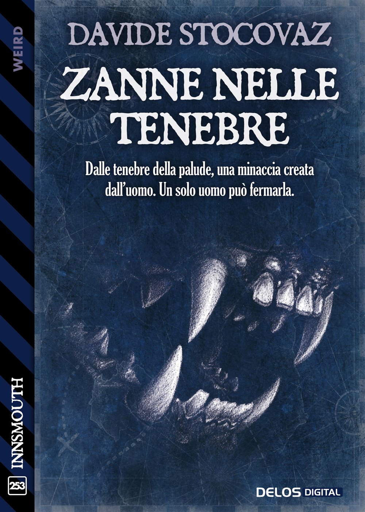

Romanzo · Weird
Zanne nelle tenebre
Dalle tenebre della palude, una minaccia creata dall'uomo. Un solo uomo può fermarla.
Scopri il libro →Sito ufficiale
Libri, poesie e racconti di Davide Stocovaz. Uno spazio dedicato alle parole, ai personaggi e ai mondi che nascono sulla pagina.
Scopri le opere →In libreria
I libri e le pubblicazioni di Davide Stocovaz.

Romanzo · Weird
Dalle tenebre della palude, una minaccia creata dall'uomo. Un solo uomo può fermarla.
Scopri il libro →Poesie
Scopri i testi dell’autore
Letture
Quella notte l’aria bruciava, facendo incollare il sudore sulla pelle, come se tutto il corpo fosse avvolto da una pellicola calda. Era aria proveniente dal Nord Africa, le avevano persino dato un nome a quell’ondata: Lucifero.
Leggi Linea X →L’autore
Davide Stocovaz è nato a Trieste nel 1985.
È autore di diversi romanzi e sceneggiatore. Alterna il percorso in narrativa con la stesura di racconti e poesie.
Nel 2010 vince il Primo Premio Internazionale per la Sceneggiatura Mattador, dedicato a Matteo Caenazzo.
Collabora con diverse riviste letterarie.
Leggi la biografia →